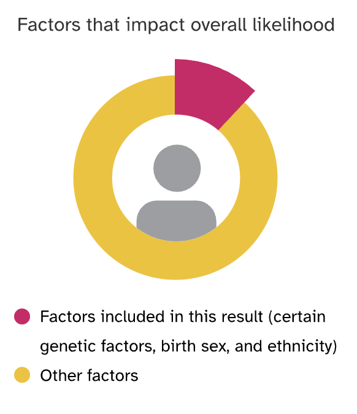

What is depression? Everyone can sometimes experience sadness, guilt, and other negative emotions in response to life’s ups and downs. But people with depression may experience intense negative emotions and other mental and physical symptoms that don’t go away over time, making it hard to carry on normal activities.
The causes of depression are complex and not completely understood, involving biological differences such as genetics, brain chemistry, hormones, as well as life experiences and environmental stressors.
Symptoms of Depression
- Feeling sad, empty, hopeless, irritable, guilty, or other difficult emotions
- Loss of interest or pleasure in activities you used to enjoy
- Decreased energy
- Difficulty thinking or concentrating
- Difficulty sleeping or oversleeping
- Loss of or increase in appetite
- Aches and pains like headaches, backaches, or digestive symptoms that do not respond to treatment
- Thoughts of harming oneself, death, or suicide
Is Depression Genetic?
Yes, the likelihood of experiencing depression is influenced by both genetic and non-genetic factors. Depression can run in families, indicating an increased chance if family members have the condition. Over 8,400 genetic markers are considered by 23andMe to estimate the likelihood of being diagnosed with depression.
Genetics combine with other factors such as health conditions, stressful life events, social isolation, and substance use to influence an individual’s overall likelihood of developing depression.

Non-Genetic Factors in Depression
Non-genetic factors that can influence depression include:
- Many health conditions, including other mental health conditions
- Stressful life events
- Social isolation or lack of support
- Problems with alcohol, tobacco, or drug use
- Having a family history of depression or other mental health conditions
- Childhood adversity or maltreatment
- Experiencing discrimination due to race, sexual orientation, gender expression and identity, or other factors
- Gender: Cisgender women and transgender and non-binary individuals are more likely to be diagnosed with depression
Ways to Manage Depression
While genetics play a role in depression, there are ways to manage symptoms:
- Seek social interaction and support from family, friends, or a mental health professional
- Engage in regular physical activity
- Practice good sleep hygiene
- Explore stress-reduction techniques like meditation or yoga
- Avoid alcohol, tobacco, and drugs
- Engage in pleasurable activities and hobbies
- Seek treatment through counseling, medication, or a combination
If you or someone you know is struggling with depression, reach out to a healthcare professional or consider using crisis support services.
Resources for Help
Here are some resources if you need help:
- 988 Suicide and Crisis Lifeline: Provides free and confidential support 24/7. Call or text 988 in the U.S., or call 1-888-628-9454.
- Crisis Text Line: Text HOME to 741741 to text with a trained crisis counselor.
- National Alliance on Mental Illness (NAMI): Helpline 1-800-950-NAMI (6264) available Monday through Friday, 10am to 8pm ET.
- Therapy: Consider talking to a therapist for support and treatment options.